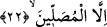

tapmakta olduğunuz şeylere de öf olsun!” (el-Enbiya, 21/67). Allah Teâlâ önce
“Onlardan korkmayın” buyururken, hemen âyetin devamında “Benden korkun” (Al-i,
İmran, 3/175) buyurmaktadır. Kâmil insanlar bu sıfatları iyi bir şekilde kullanırlar.
Birçok derviş, Allah Teâlâ bu sıfatları çalışmaz vaziyette bırakıp durdurduğunda
bunların kendilerinden zâil olduğunu zannederler, hâlbuki durum böyle değildir.
Fakîr (Bursevî) şöyle derim: Bu açıklamalardan, “Şüphesiz nefis aşırı şekilde
kötülüğü emreder.” (Yusuf, 12/53) sözünün sıhhati anlaşılmış olur, isterse bu nefis, -
daha önce Yusuf Sûresi’nde gördüğümüz üzere- peygamberlerin nefsi olsun!
Kısaca ifâde etmek gerekirse, yukarda işâret ettiğimiz vasıfların ve sıfatların aslı kök
olarak herkesin mayasında mevcuddur. Bu da, insanoğlu nefsi ile muhârebe edebilsin
diye böyledir. Zira insanın yücelmesi ve terakkî etmesi ancak nefsiyle mücâdele
etmesiyle mümkündür. Terakkî ise ölüme kadar devam eder. Aynı şekilde, o sıfatların
asıllarının mevcûd olması üzerine kurulu olan savaş devam edecektir. Nefsin karakteri,
çokça kötülükleri emretmektir, fakat onun bu tesiri, nâkıs olan insanlarda göründüğü
gibi kâmil insanlarda görünmez. Bunu iyi anla!
Kâşânî der ki: Nefis, tabîatı itibariyle şerrin kaynağı ve pisliğin sığınağıdır. Çünkü o
zulümât/karanlıklar âlemindendir. Kim nefsine kalbi ile meyledecek olur ve cibilliyeti
ile yaratılışının gereği kendisine gâlip gelirse, o zaman o kimse, süflî işlere uygun bir
hâle gelir ve aşağılık vasıflarla sıfatlanmış olur. Bu kötü vasıfların en düşükleri ise
“kendisine bir kötülük dokunduğunda sızlanır, feryâd eder” âyet-i kerîmesinde işâret
edilen korkaklık ve cimriliktir. O kişinin aşağılık sıfatlarla vasıflanmasının sebebi,
bedenin kendine uygun şeyleri sevmesi, kişiyi şehvet ve lezzetlere sürüklemesidir.
Korkaklık ve cimrilik, insanın kalbini varlık mertebelerinin en alt tabakasına çektiği
için en aşağılık vasıflardır.
et-Te’vilatü’n-necmiyye’de şöyle buyrulur: Bu âyet-i kerîmede, ilâhî feyzi kabûle
istidâdlı olan insanın an be an daha da aceleci davrandığına, kemâle ulaşma noktasında
sabırsızlık gösterdiğine işâret edilmektedir. Çünkü insan sülûk yolunda devam ederken
ilâhî isimlerden birisiyle alâka kurar, onun hakîkatine erer ve onunla ahlâklanır, sonra
başka bir isme yönelir. Bu hâl, sülûkü esnâsında bütün esmâ-i ilâhiyye ile
ahlâklanıncaya kadar böyle devam eder. Kendisine bir şer; yâni yolda zuhûr eden bir
fetret/durgunluk isâbet ettiğinde sızlanır, feryâd eder, sağa sola gitmeye başlar ve
tedirgin olur. Bilmez ki yolda meydana gelen bu fetret, onun sülûkünün sür’atlenmesine
sebep olacak, seyrini kuvvetlendirecektir. Kendisine bir hayır geldiğinde, yâni zâtî
mevhibe ve ilâhî isimlerden gelen ihsanlara nâil olduğunda ise bunlardan lâyık olan
kişilere vermez, talep edenlere karşı cimri davranır.